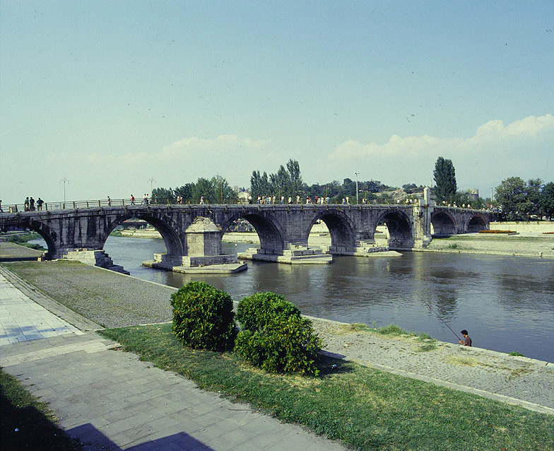
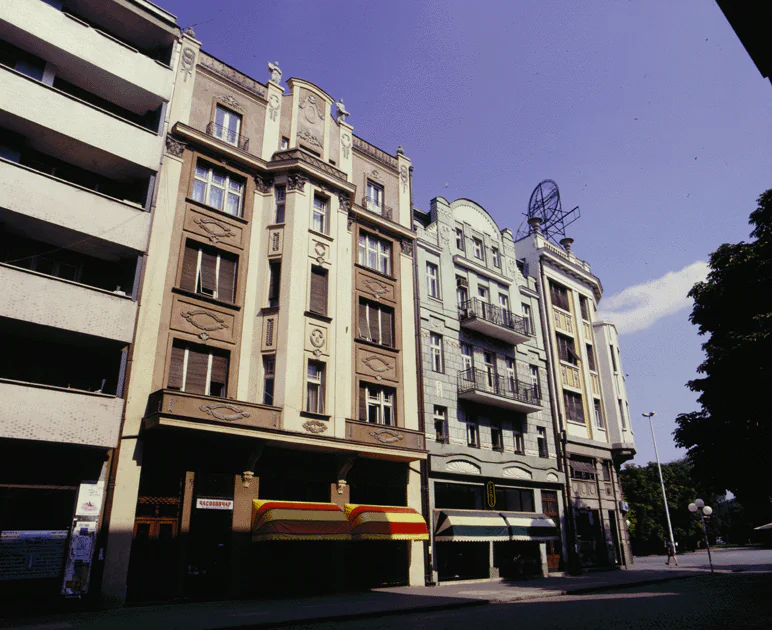
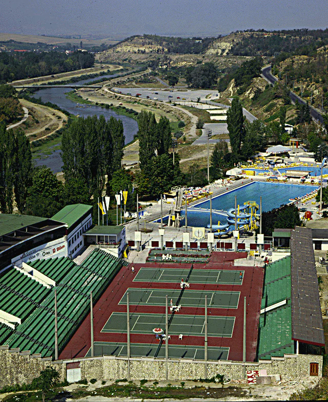
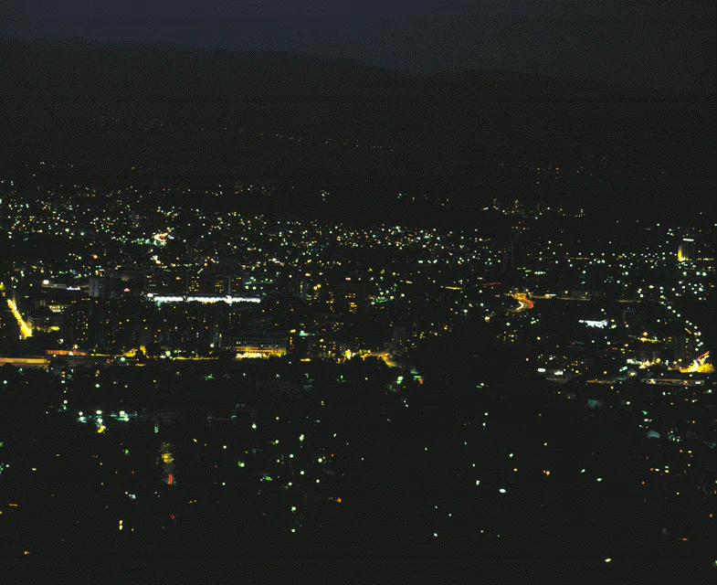

Daut-Pascha-Hamam
- Produktion
- UFUŽ und Dokumentarfilm Prag
- Drehbuch und Regie
- Slavko Janevski und EMAN CANERA
- Jahr
- 1959
- Dauer
- 00:08

Der Dom „Hl. Kliment von Ohrid“. Am 12. August 1990 wurde der Dom „Hl. Kliment von Ohrid“ feierlich geweiht, in Anwesenheit zahlreicher hoher Geistlicher mit Erzbischof Gavril an der Spitze. An der Feier nahmen etwa 80 Tausend Menschen teil - Bürger von Skopje, aus anderen Städten Mazedoniens und Mazedonier aus der Diaspora (Australien, Kanada, USA und mehreren europäischen Ländern).



Blick von der Steinbrücke auf den alten Teil der Stadt.

Die Promenade am rechten Ufer des Vardar.

Die Festung von Skopje - Kale und der Fluss Vardar.

Sonnenuntergang über der alten Steinbrücke.


Panoramablick auf das zentrale Gebiet von Skopje von der Festung von Skopje - Kale.

Panoramablick auf Skopje. Im Mittelgrund das Theater von Skopje.

Der Ristić-Palast und der Platz.

Ein Teil der Straße „Makedonija“ zum Platz hin.


Einkaufszentrum „Mavrovka“

Ein Teil des Zentrums von Skopje - „Arabisches Haus“.

Das Gebäude der Zeitung „Nova Makedonija“.

Einkaufszentrum „Bunjakovec“.

Die alten Handwerke bestehen in Skopje noch fort. Das Foto zeigt einen Laden, in dem Haushaltsgeräte gefertigt werden. Die Herstellung ist fast dieselbe wie vor Hunderten von Jahren.

Ein Teil des Daut-Pascha-Hamams und im Hintergrund das Gebäude des Mazedonischen Rundfunks.

Ein Teil des alten Basars von Skopje.

Panorama von Skopje nach Nordwesten.

Nachtpanorama von Skopje nach Nordwesten.

Blick auf Skopje vom Berg Vodno.

Panorama des zentralen Stadtgebiets von der Festung von Skopje - Kale.


Das Denkmal für Mutter Teresa, errichtet am 5. September 1998.

 Aquädukt4 Postkarten
Aquädukt4 Postkarten Kale30 Postkarten
Kale30 Postkarten Brücken60 Postkarten
Brücken60 Postkarten Kai58 Postkarten
Kai58 Postkarten Platz46 Postkarten
Platz46 Postkarten Bauten66 Postkarten
Bauten66 Postkarten Christliche Gotteshäuser19 Postkarten
Christliche Gotteshäuser19 Postkarten Muslimische Bauten33 Postkarten
Muslimische Bauten33 Postkarten Offiziersheim29 Postkarten
Offiziersheim29 Postkarten Theater28 Postkarten
Theater28 Postkarten Bahnhof13 Postkarten
Bahnhof13 Postkarten Schulen36 Postkarten
Schulen36 Postkarten Parks12 Postkarten
Parks12 Postkarten Märkte18 Postkarten
Märkte18 Postkarten Straßen38 Postkarten
Straßen38 Postkarten Panorama I60 Postkarten
Panorama I60 Postkarten Panorama II30 Postkarten
Panorama II30 Postkarten Collagen55 Postkarten
Collagen55 Postkarten Hochwasser9 Postkarten
Hochwasser9 Postkarten Erdbeben27 Postkarten
Erdbeben27 Postkarten Skopje 200026 Postkarten
Skopje 200026 Postkarten